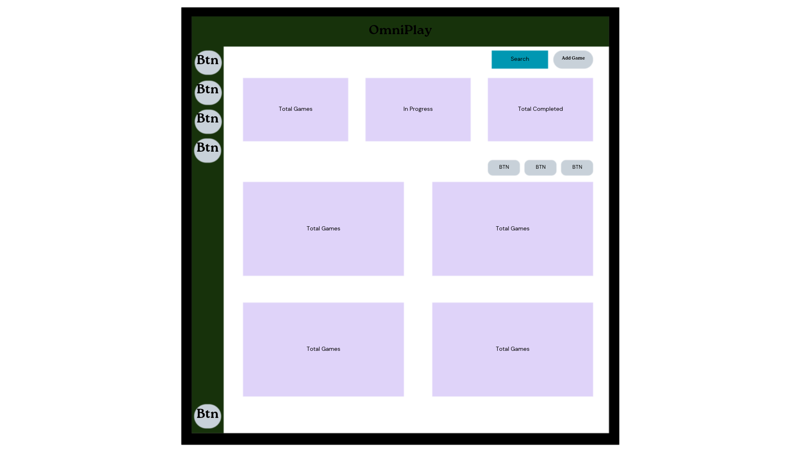

Overview
Purpose
OmniPlay is a dynamic web application built for anyone who plays games and enjoys digital entertainment across multiple PC and console storefronts. It provides a single, centralized dashboard where users can catalog their entire owned game library regardless of platform, filter titles by system or completion status, and actively manage their entertainment backlog in one place.
Audience
OmniPlay is designed for gamers who own games across multiple platforms and want a centralized way to manage their library. It targets both casual and dedicated gamers who want to keep track of their progress and plan their next gaming sessions.
Dynamic elements
OmniPlay will utilize JavaScript to provide a dynamic user experience, including interactive filtering options, real-time updates on game status, and a responsive layout that adapts to different screen sizes.
Branding
Logo
Style Guide
Color Palette
Palette URL: https://coolors.co/0b0f12-23433d-718896-91d39f-f5f6f4| Primary | Secondary | Accent 1 | Accent 2 |
|---|---|---|---|
| [#0B0F12] | [#23433D] | [#718896] | [#91D39F] |
Pseudocode for your project
- CONNECT TO THE PAGE Find the main parts of the webpage so the program can control them: the add-game form, the filter buttons, the top score counters, and the empty area where game cards will appear.
- LOAD SAVED GAMES Check the browser's saved memory for any games the user added previously. If nothing is saved yet, load a small starter list of sample games and set both filters to show "All".
- DRAW THE SCREEN Clear out any old cards on the page, then check which games match the user's selected platform and status filters. For every matching game, build a card showing its cover picture, title, gaming system, status menu, and delete button, then update the total counters at the top.
- RESPOND TO THE USER - Adding a game: When the user submits the form, save the new game to the list and refresh the screen. - Filtering: When the user clicks a system button or picks a status, hide non-matching games and refresh the screen. - Changing status: When the user picks a new status on a card, save that update and refresh the top counters. - Deleting: When the user clicks delete on a card, remove that game from the list, save the change, and refresh the screen.
- START THE APP As soon as the webpage finishes loading, draw the screen for the first time.
Wireframes
Create wireframes for your project page(s). One for each page and list them here.
Landing page
The buttons on the left side will be the in descending order are "main library", "Progress", "Favorites", and "Settings". The main library will be the default page that loads when the user first opens the app. The main library will have a search bar at the top, a filter for platform and status, and a list of all games in the user's library. Each game will have a cover image, title, platform, status, and a delete button. The progress page will show the user's progress on each game in their library. The favorites page will show the user's favorite games. The settings page will allow the user to change their username and password.
